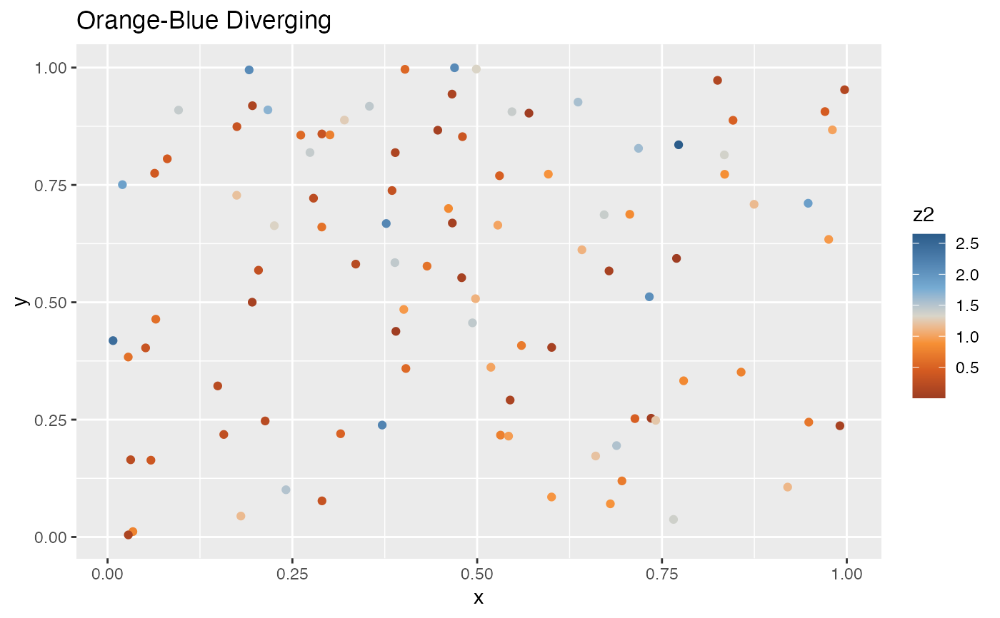
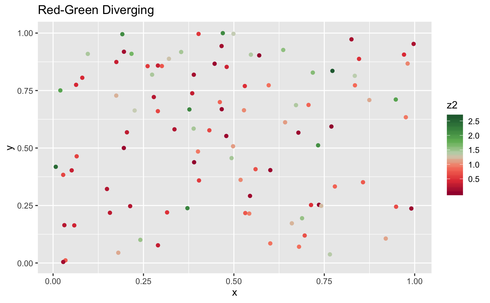
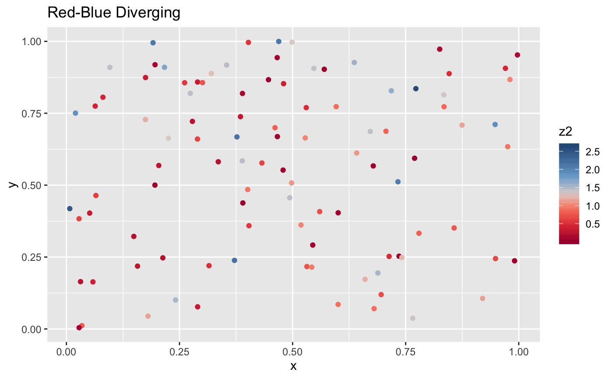
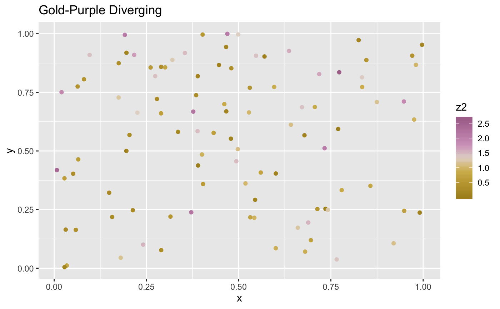
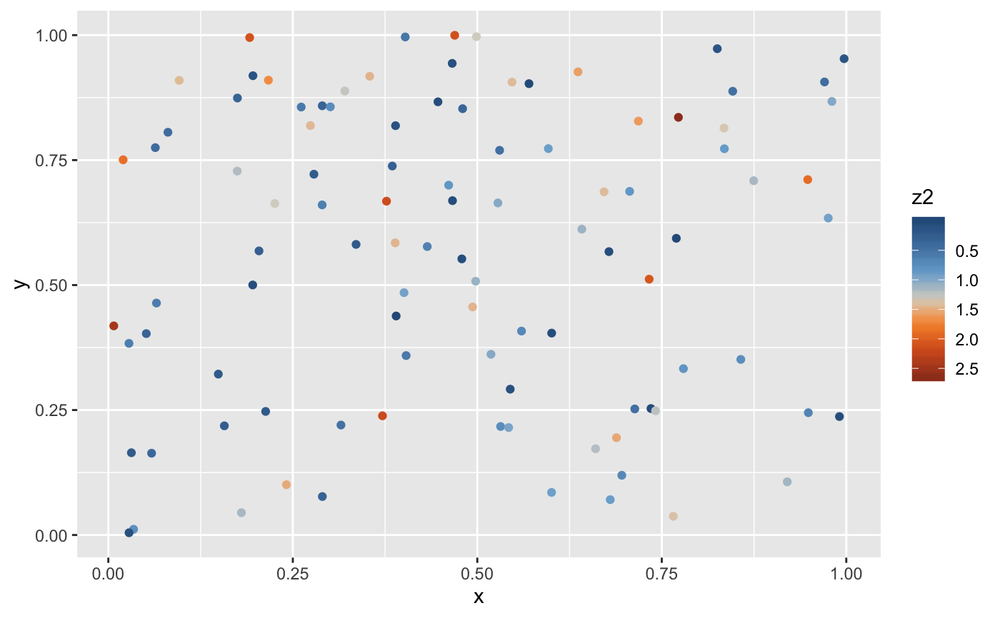

Continuous color scales using the diverging color scales in Tableau.
See scale_colour_tableau() for Tabaleau discrete color scales,
and scale_colour_gradient_tableau() for sequential color scales.
scale_colour_gradient2_tableau( palette = "Orange-Blue Diverging", ..., na.value = "grey50", guide = "colourbar" ) scale_fill_gradient2_tableau( palette = "Orange-Blue Diverging", ..., na.value = "grey50", guide = "colourbar" ) scale_color_gradient2_tableau( palette = "Orange-Blue Diverging", ..., na.value = "grey50", guide = "colourbar" )
Arguments
| palette | Palette name.
|
|---|---|
| ... | Arguments passed to |
| na.value | Colour to use for missing values |
| guide | Type of legend. Use |
See also
Other colour tableau:
scale_colour_gradient_tableau(),
scale_colour_tableau(),
tableau_color_pal(),
tableau_gradient_pal()
Examples
library("ggplot2") df <- data.frame( x = runif(100), y = runif(100), z1 = rnorm(100), z2 = abs(rnorm(100)) ) p <- ggplot(df, aes(x, y)) + geom_point(aes(colour = z2)) palettes <- ggthemes_data[["tableau"]][["color-palettes"]][["ordered-diverging"]] for (palette in head(names(palettes))) { print(p + scale_colour_gradient2_tableau(palette) + ggtitle(palette)) }# If you need to reverse a palette, use a transformation p + scale_colour_gradient2_tableau(trans = "reverse")